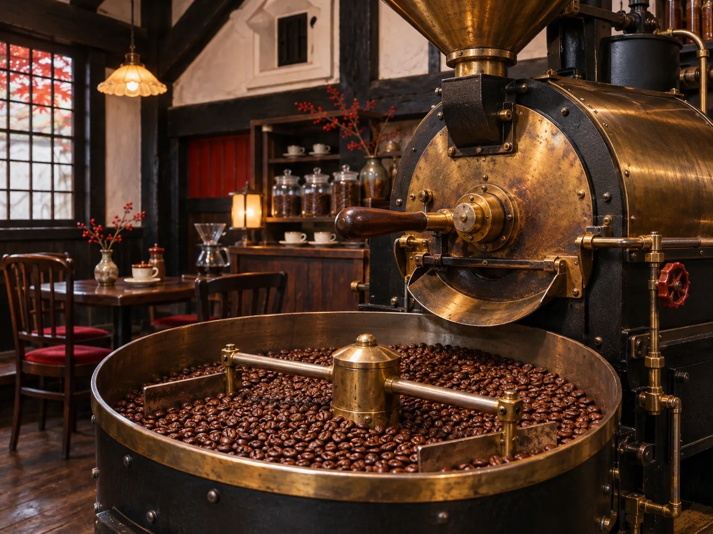

CONCEPT
親子二代の、
純喫茶
はじまりは1977年、名駅三丁目の「喫茶ポピー」。34年間続いたお店を受け継いで、 2019年、江戸時代からの商人町・四間道に「喫茶ニューポピー」がひらきました。
From Seed to Cup
焙煎士が産地を訪ね、農家さんの話を聞き、品質を確かめた豆を自家焙煎。喫茶文化を受け継ぎながら、コーヒーの可能性を広げています。
喫茶する、60分。 公式Instagramより
蔵造り風の2階建て。中央は吹き抜けで、階段の先にはロフト席。席と席の間がゆったりしていて、居心地のよさを大切にしたお店だと、来店された方は書いていました。
